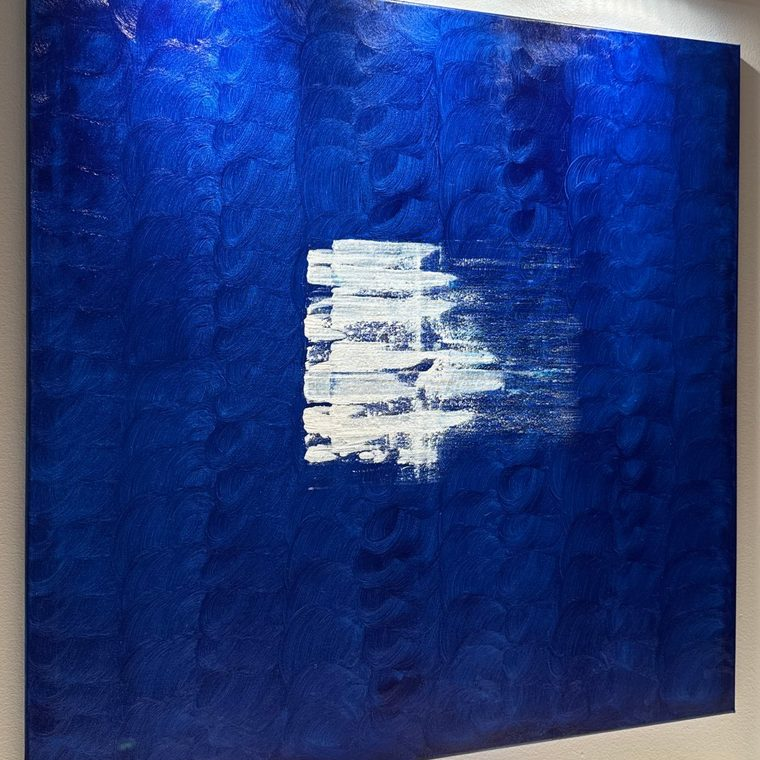
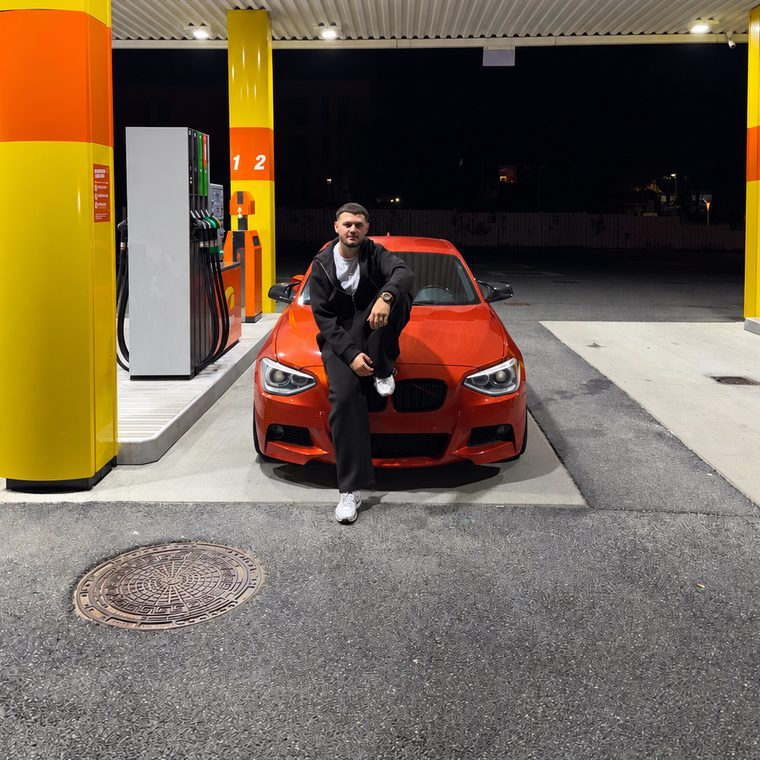
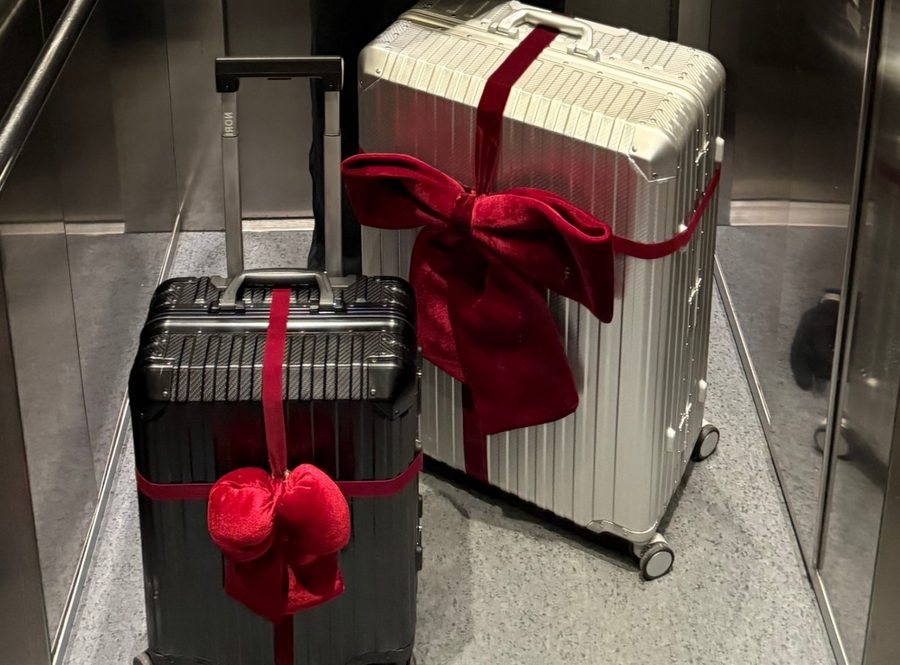
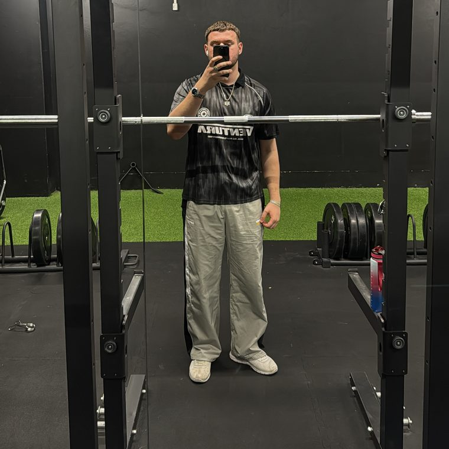

Kunst & maleri
Jeg elsker at tegne og male. Jeg har blandt andet skabt og solgt mine egne malerier. For mig er kunst en måde at udtrykke tanker, følelser og historier på uden nødvendigvis at bruge ord.

Om mig
Multimediedesigner under uddannelse, med passion for design, mennesker og en god omgang humor på vejen.

Jeg er ikke bare en, der trykker på knapper i Figma eller skriver kode i Visual Studio. Jeg er en person, der skaber forbindelser, både mellem ide og løsning og mellem mennesker.
Uanset om jeg sidder i en gruppe og brainstormer, interviewer en bruger eller skitserer en ide, prøver jeg at bringe energi, ærlighed og nysgerrighed ind i processen.
Jeg er loyal. Hvis vi laver noget sammen, er jeg med hele vejen. Jeg er også sjov, fordi lidt grin undervejs gør selv de sværeste opgaver lettere. Mine venner og kolleger siger, at jeg er omsorgsfuld og opmuntrende, og det passer. Jeg elsker at se folk vokse og finde deres styrker.
Jeg er pålidelig og opmærksom. Jeg fanger den detalje, de andre måske overså, og jeg husker, hvad der blev sagt sidste uge. Jeg er også stædig på den gode måde: Jeg giver ikke op, før løsningen fungerer, og jeg er ikke bange for at gøre tingene om, hvis det betyder, at vi kommer i mål med noget stærkere.
Sympati og ærlighed er vigtige værdier for mig, både i arbejdet og i livet. Derfor er jeg mig selv 100 procent, også på den her side. Du kan mærke lidt bilhumor, lidt kant og lidt varme i det hele.
Værktøjet er bare skiftet ud med designprogrammer, brugerindsigt og digitale løsninger.
Jeg har været mekaniker og ved, hvordan det er at få olie på hænderne. Jeg har prøvet at have ansvar, løse problemer hurtigt og tænke kreativt, bare med skruenøgler og reservedele.
På uddannelsen som multimediedesigner har jeg arbejdet med cases som RSOK, hvor vi har researchet, brugertestet, designet og kodet websites med fokus på både brugeroplevelse og målgruppe. Jeg arbejder struktureret og målrettet. Jeg nyder at nørde med detaljer, men også at have det store overblik.
Jeg vil gerne arbejde et sted, hvor mennesker, design og teknologi mødes. Gerne i en virksomhed med plads til både grin, udvikling og ambitiøse løsninger.
Jeg leder efter en praktikplads eller et studiejob, hvor jeg kan bidrage med det, jeg kan, og samtidig lære mere og vokse som designer og som menneske.
Hobbyer
Min kreativitet stopper ikke, når jeg lukker computeren ned. Jeg har altid haft mange interesser og elsker at udforske nye ideer, lære nye ting og skabe noget fra bunden.
Jeg elsker at tegne og male. Jeg har blandt andet skabt og solgt mine egne malerier. For mig er kunst en måde at udtrykke tanker, følelser og historier på uden nødvendigvis at bruge ord.

Jeg har altid haft en stor passion for biler, og hvis der er et bilmærke, jeg virkelig elsker, så er det BMW. Jeg kan bruge timevis på at nørde modeller, motorer, design og alt det tekniske. Med min baggrund som mekaniker elsker jeg også selv at skrue på biler, finde fejl og gøre dem til mine egne. For mig er biler meget mere end bare transport. Det er en hobby, jeg aldrig bliver træt af.

Jeg er medstifter af NordCase ApS, hvor jeg arbejder med alt fra produktdesign og branding til webshop og forretningsudvikling. Jeg elsker at se en ide udvikle sig til et fysisk produkt, som andre mennesker kan få glæde af.
Se Nordcase-casen
Jeg holder af at løbe og styrketræne. Træning giver mig energi, overskud og mulighed for at udfordre mig selv. Jeg kan godt lide at sætte mål og arbejde hen imod dem, både fysisk, kreativt og professionelt.

Kompetencer
Personligt
Test af den her side
Spørgsmål: Hvad handler denne hjemmeside om?
Svar: Testpersonen syntes, at siden lignede et CV eller en portfolio for en, der hedder Leon, og så noget med Casestudy, Kontakt og Om mig.
Konklusion: Siden kommunikerer nogenlunde, at den er en portfolio, på grund af billedet, teksten og knapper som Kontakt mig.
Se, hvad jeg har lavet
Casestudy